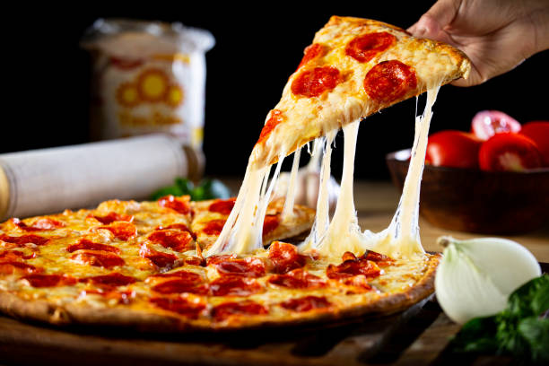

Home
Pizza

Pizza: The Global Favorite with Italian Roots
Pizza, originally from Italy, has evolved into one of the most beloved and
versatile dishes worldwide. Known for its combination of crispy dough,
savory sauce, and melty cheese, pizza offers endless possibilities for
toppings, catering to every palate. Traditionally, the pizza base is made
from simple ingredients like flour, yeast, and water, but the creativity
comes in the toppings. Whether it's a classic Margherita, a meat lover’s
dream, or a veggie-packed delight, pizza is enjoyed in countless
variations across the globe.
The key to a great pizza lies in the balance of flavors and textures. The
crust should be perfectly crispy, while the tomato sauce adds a tangy,
rich base. Mozzarella cheese is the classic choice for topping, though
many variations include parmesan, gouda, or even blue cheese. Fresh herbs
like basil or oregano, along with a drizzle of olive oil, elevate the
flavors. Whether baked in a wood-fired oven or a conventional one, pizza
continues to be a comfort food favorite that brings people together for
casual meals, parties, and celebrations.
Ingredients
-
Dough: All-purpose flour, yeast, water, olive oil,
salt, and sugar
-
Sauce: Tomato sauce (often with garlic, olive oil, and
herbs like oregano or basil)
-
Cheese: Mozzarella (fresh or shredded), parmesan, or
other varieties like cheddar or gouda
-
Toppings: Pepperoni, sausage, mushrooms, onions, bell
peppers, olives, spinach, etc.
-
Herbs: Fresh basil, oregano, and a sprinkle of red
pepper flakes for heat
-
Drizzle: Olive oil (for brushing the crust) and
balsamic glaze (optional for finishing)
Preparation Steps
-
Prepare the dough: In a bowl, combine warm water,
yeast, and a pinch of sugar. Let it sit for 5-10 minutes until the yeast
activates and bubbles. In a separate large bowl, mix the flour and salt.
Add the yeast mixture and olive oil to the flour and mix until a dough
forms. Knead the dough for about 8-10 minutes until it becomes smooth
and elastic. Cover with a damp cloth and let it rise in a warm place for
1-2 hours, or until it doubles in size.
-
Prepare the sauce: In a small pot, heat olive oil and
sauté minced garlic for a minute. Add tomato puree, salt, pepper, and
dried oregano or basil. Let the sauce simmer for 10-15 minutes, stirring
occasionally. Once done, set aside to cool.
-
Preheat the oven: Preheat your oven to 475°F (245°C)
and place a pizza stone or baking sheet inside to heat up.
-
Shape the dough: Once the dough has risen, punch it
down to release the air. Roll the dough on a floured surface into a
circle or desired shape (about 10-12 inches in diameter). Transfer it to
a piece of parchment paper or a pizza peel for easy handling.
-
Assemble the pizza: Spread a thin layer of the tomato
sauce over the dough, leaving a small border around the edges for the
crust. Sprinkle a generous amount of mozzarella cheese over the sauce.
Add your desired toppings, such as pepperoni, mushrooms, bell peppers,
or olives. Season with salt, pepper, and a sprinkle of dried oregano.
-
Bake the pizza: Transfer the pizza to the preheated
oven (on the pizza stone or baking sheet) and bake for 10-12 minutes, or
until the crust is golden and the cheese is bubbly and slightly browned.
-
Finish and serve: Once baked, remove the pizza from the
oven and let it cool for a minute. Drizzle with olive oil or balsamic
glaze if desired, and top with fresh basil leaves. Slice and serve hot,
enjoying the perfect balance of crispy crust, rich sauce, and melty
cheese.